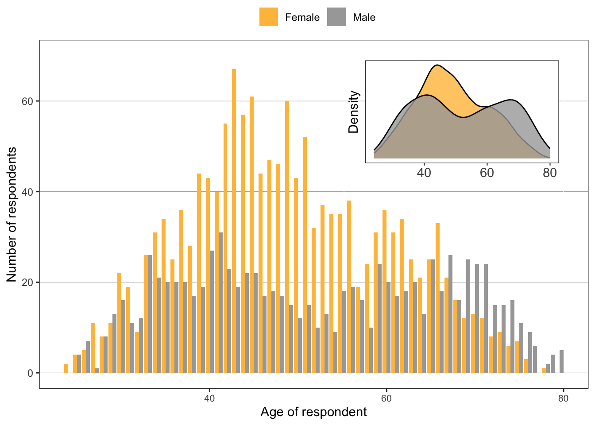
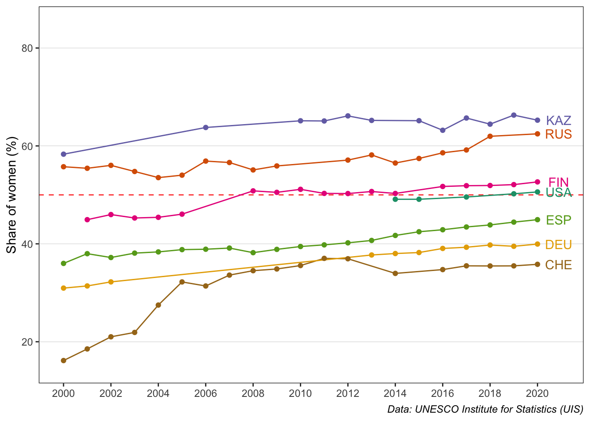
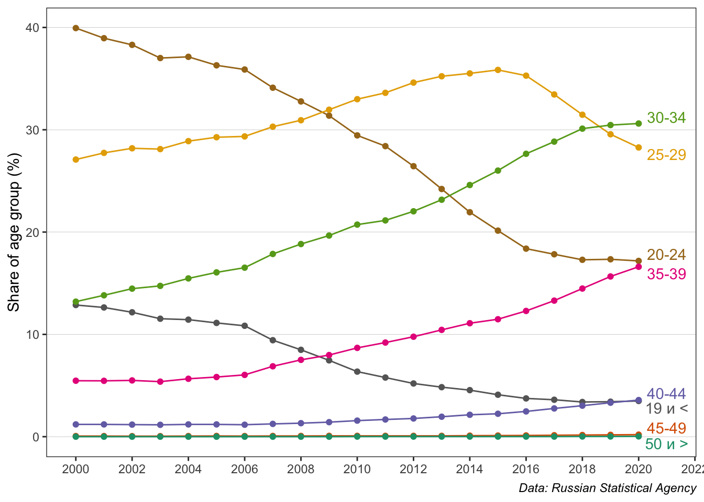

Work-life and work-work balance in universities and research centers in Russia. What can we do to stop reinforcing gender gaps?
Elena Chechik
Center for Institutional Analysis of Science & Education European University at St. Petersburg
Figure S1: Visualization of the leak of men from academia in the 90s and early 00s: Two-humped distribution by age for male economists with the drop in age 50-55.

Figure S2: Percentage of teachers in tertiary education who are female (%)

Table S1: Distribution of women and men by age of having first child and PhD/DS defense
| Female (N=1494) |
Male (N=901) |
p-value | |
|---|---|---|---|
| Age | |||
| Mean (SD) | 48.9 (11.3) | 52.1 (14.4) | < 0.001 |
| Median [Min, Max] | 48.0 [24.0, 78.0] | 51.0 [25.0, 80.0] | |
| Age of having a first child | |||
| Mean (SD) | 26.5 (4.83) | 28.1 (5.61) | < 0.001 |
| Median [Min, Max] | 25.0 [17.0, 47.0] | 27.0 [17.0, 56.0] | |
| Missing | 396 (26.5%) | 264 (29.3%) | |
| Age of a PhD defense | |||
| Mean (SD) | 32.2 (6.73) | 31.8 (7.34) | 0.224 |
| Median [Min, Max] | 30.0 [20.0, 59.0] | 29.5 [22.0, 70.0] | |
| Missing | 230 (15.4%) | 141 (15.6%) | |
| Age of a DS defense | |||
| Mean (SD) | 44.5 (7.62) | 45.1 (8.49) | 0.377 |
| Median [Min, Max] | 44.0 [30.0, 65.0] | 45.0 [26.0, 70.0] | |
| Missing | 1226 (82.1%) | 594 (65.9%) |
Figure S3: Dynamics of age at first birth for women
